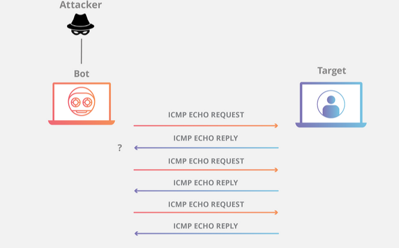

El Protocolo de control de mensajes de Internet (ICMP) es un protocolo en la capa de red que utilizan los dispositivos de red para diagnosticar problemas de comunicación en la red. El ICMP se utiliza principalmente para determinar si los datos llegan o no a su destino a su debido tiempo. El protocolo ICMP se suele utilizar en dispositivos de red, como los enrutadores. El ICMP es crucial para informar de errores y realizar pruebas, pero también se puede utilizar en ataques de denegación de servicio distribuido (DDoS).
Tema 2 PAR
6.2.3. Protocolo ICMP
¿Para qué se utiliza el ICMP?
El objetivo principal del ICMP es informar sobre errores. Cuando dos dispositivos se conectan a través de Internet, el ICMP genera errores para compartirlos con el dispositivo emisor en caso de que alguno de los datos no haya llegado a su destino previsto. Por ejemplo, si un paquete de datos es demasiado grande para un enrutador, este descartará el paquete y enviará un mensaje ICMP de vuelta a la fuente original de los datos.
Un uso secundario del protocolo ICMP es llevar a cabo diagnósticos de red; las utilidades de terminal más utilizadas, traceroute y ping, funcionan ambas con ICMP. La utilidad traceroute se utiliza para mostrar la ruta de enrutamiento entre dos dispositivos de Internet. La ruta de enrutamiento es el camino físico real de los enrutadores conectados por el que debe pasar una solicitud antes de llegar a su destino. El trayecto entre un enrutador y otro se conoce como "salto", y una traceroute también informa del tiempo necesario para cada salto en el camino. Esto puede ser útil para determinar las fuentes de retraso de la red.
La utilidad ping es una versión simplificada de traceroute. Un ping probará la velocidad de la conexión entre dos dispositivos, e informará exactamente del tiempo que tarda un paquete de datos en llegar a su destino y volver al dispositivo del remitente. Aunque el ping no proporciona datos sobre el enrutamiento o los saltos, sigue siendo una métrica muy útil para calibrar la latencia entre dos dispositivos. Los mensajes ICMP de solicitud de eco y de respuesta de eco se utilizan habitualmente para realizar un ping.
Desgraciadamente, los ataques a la red pueden aprovecharse de este proceso, creando medios de alteración como el ataque de inundación de ICMP y el ataque de ping de la muerte.
¿Cómo funciona ICMP?
A diferencia del protocolo de Internet (IP), ICMP no está asociado a un protocolo de la capa de transporte como TCP o UDP. Esto hace que ICMP sea un protocolo sin conexión: un dispositivo no necesita abrir una conexión con otro dispositivo antes de enviar un mensaje ICMP. El tráfico IP normal se envía utilizando TCP, lo que significa que dos dispositivos que intercambian datos primero llevarán a cabo un protocolo de enlace TCP para asegurarse de que ambos dispositivos estén listos para recibir datos. ICMP no abre una conexión de esta manera. El protocolo ICMP tampoco permite apuntar a un puerto específico en un dispositivo.
¿Qué es un paquete ICMP?
Un paquete ICMP es un paquete que usa el protocolo ICMP. Los paquetes ICMP incluyen un encabezado de ICMP después de un encabezado de dirección IP normal. Cuando un enrutador o servidor necesita enviar un mensaje de error, el cuerpo del paquete ICMP o sección de datos siempre contiene una copia del encabezado de dirección IP del paquete que causó el error.
¿Cómo se utiliza ICMP en los ataques DDoS?
Una inundación de ping o de ICMP es cuando el atacante intenta sobrecargar un dispositivo objetivo con paquetes de solicitud de eco de ICMP. El objetivo tiene que procesar y responder a cada paquete, lo que consume sus recursos informáticos hasta que los usuarios legítimos no pueden recibir el servicio.
Ataque de inundación de ICMP:

Ataque de ping de la muerte
Un ataque de ping de la muerte se produce cuando el atacante envía un ping de tamaño superior al máximo permitido para un paquete a una máquina objetivo, lo que provoca que la máquina se bloquee o deje de funcionar. El paquete se fragmenta de camino a su objetivo, pero cuando el objetivo vuelve a ensamblar el paquete en su tamaño máximo original, el tamaño del paquete provoca un desbordamiento del búfer.
El ataque de ping de la muerte es ya prácticamente algo que pertenece a la historia. Sin embargo, los equipos de red más antiguos podrían seguir siendo susceptibles de sufrirlo.
Ataque smurf
En un ataque Smurf, el atacante envía un paquete ICMP con una dirección IP de origen falsa. El equipo de red responde al paquete, enviando las respuestas a la IP falsa e inundando a la víctima con paquetes ICMP no deseados. Igual que el "ping de la muerte", en la actualidad el ataque Smurf solo es posible con equipos heredados.
El ICMP no es el único protocolo de la capa de red utilizado en ataques DDoS a la capa 3. Por ejemplo, Los atacantes también han utilizado paquetes GRE en el pasado.
Normalmente, los ataques DDoS a la capa de red se dirigen a los equipos e infraestructuras de red, a diferencia de los ataques DDoS a la capa de aplicación, que se dirigen a las propiedades web.
Obra publicada con Licencia Creative Commons Reconocimiento Compartir igual 4.0